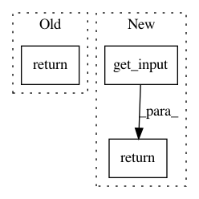

2ab9f0ef616c6d05124bdf9c81eb542d73f8e5b6,keras/layers/core.py,Layer,get_output,#Layer#Any#,27
Before Change
self.previous = layer
def get_output(self, train):
return self.input
def get_input(self, train):
if hasattr(self, "previous"):
return self.previous.get_output(train=train)
After Change
self.previous = layer
def get_output(self, train=False):
return self.get_input(train)
def get_input(self, train=False):
if hasattr(self, "previous"):
return self.previous.get_output(train=train)
In pattern: SUPERPATTERN
Frequency: 3
Non-data size: 3
Instances
Project Name: keras-team/keras
Commit Name: 2ab9f0ef616c6d05124bdf9c81eb542d73f8e5b6
Time: 2015-06-30
Author: francois.chollet@gmail.com
File Name: keras/layers/core.py
Class Name: Layer
Method Name: get_output
Project Name: keras-team/keras
Commit Name: ee179f7da155c3cb8129b954db828906886ad4e4
Time: 2015-06-08
Author: francois.chollet@gmail.com
File Name: keras/layers/core.py
Class Name: AutoEncoder
Method Name: get_input
Project Name: keras-team/keras
Commit Name: 2ab9f0ef616c6d05124bdf9c81eb542d73f8e5b6
Time: 2015-06-30
Author: francois.chollet@gmail.com
File Name: keras/layers/containers.py
Class Name: Graph
Method Name: get_input